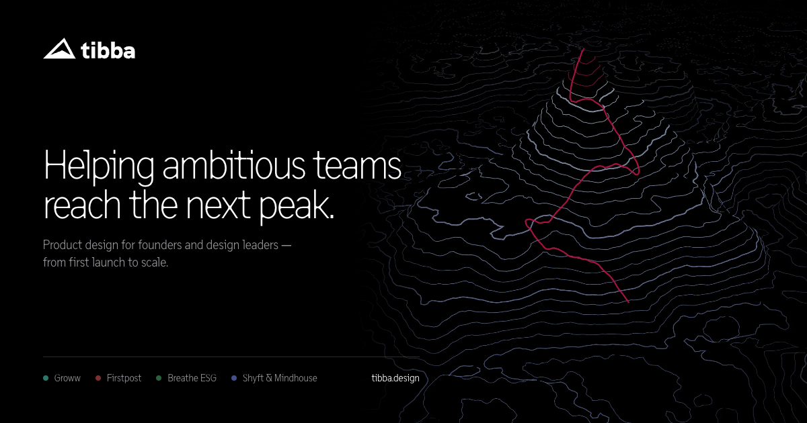
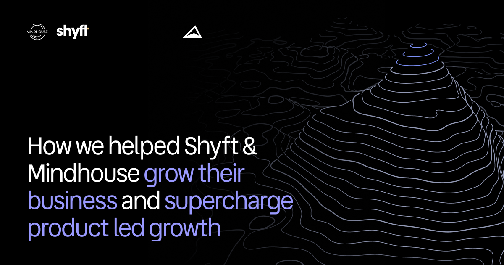

How we made the Tibba mountain
The ideas, tools and summits behind the moving mountain at the top of tibba.design.
- Published
- Updated
- Reading
- 8 min
The first thing anyone sees on tibba.design is a mountain. It counts up from the valley floor, the camera drops into it, and a thin line climbs to the summit. It took us a year of sketches, one stubborn generator and a lot of contour lines.
Tibba means a small hill. We’ve always described our work as climbing with a client: base camp, the ascent, the summit, then the next peak. A mountain was the obvious symbol, which is exactly why it was hard. Obvious symbols go generic fast.
We didn’t want a picture of a mountain. We wanted a map of one, that you could walk.
So we gave ourselves one rule: no stock peaks, no low-poly triangles, no snowy photograph. Below is everything that got us there, in the order we leaned on it, with a note on why each one earned its place.
The ideas we borrowed
Old cartography and older maths. None of it is ours; all of it is on the page.
01Contour lines
Contour line A line joining points of equal height on a map. The spacing between lines shows how steep the ground is. Wen.wikipedia.org
Maps gave us the language. Contours are honest: each line is a single height, and put enough of them together and a flat screen suddenly has a slope.
02Marching squares
Marching squares An algorithm that draws contour lines through a grid of sampled values, one cell at a time. Wen.wikipedia.org
For every cell we check which corners sit above a height and draw the short segment where the line must cross. Stitch the segments together and you get one contour. Repeat for every height and you get the mountain.
// one contour at height h, over a grid of samples
for (let y = 0; y < rows; y++) for (let x = 0; x < cols; x++) {
const c = (z[y][x] > h) | (z[y][x+1] > h) << 1
| (z[y+1][x+1] > h) << 2 | (z[y+1][x] > h) << 3;
if (c && c !== 15) segments.push(...edge(c, x, y, h));
}03Switchbacks
Switchback A path that zig-zags up a steep slope: long traverses across the face, a tight turn, and back. Wen.wikipedia.org
Our first trail ran straight up the slope and looked like a crack, not a path. The fix was a triangle wave with rounded corners, plus a little wobble, because a path that repeats perfectly reads as drawn, not walked.
The pieces we built
Our own tools. Most of the work was saying no to them.
04The landform generator
Tibba Design Studio The home page, where the landform draws the hero’s massif and the four client summits as one range. tibba.design
tibba.design

A landform isn’t a model, it’s a recipe: parts summed together, each with a height, a spread and a sharpness. One part is a cone, and nobody believes a cone. Domain warp bends the ridgelines, spurs run down from the summit like fingers, and flutes cut the gullies between them.
05The Mountains lab
An internal tool, so no card for this one. It has brushes for adding height, erosion passes, and a button that sends a preset straight into the hero. A ridge that looked dramatic in the lab often looked busy behind a headline, so most presets never left it.
06Ribbons, ink and air
On screen the lines are thin ribbons drawn by a shader, so their width follows the slope and they fade with distance without leaving the GPU. In the loader they’re lit; as you scroll they morph to flat ink, so they can sit behind text. Aerial fade pales the far ridges and a few pixels of pointer parallax give the ground its depth.
07A film for phones
A live WebGL scene is a lot to ask of a phone on a train. On small screens we play a short, pre-rendered film made from the scene itself: it looks identical, loads in a fraction of the time and leaves the battery alone. With reduced motion on, the mountain simply stays still.
Best summits to visit
Four client summits in the same heightfield as the hero, each in its client’s colour.
08Groww
Groww · Case study Boosting engagement on the app.tibba.design

Drawn in Groww’s teal. When you reach the summit, its own trail climbs from the trailhead to the top.
09Firstpost
Firstpost · Case study 2x traffic through a strategic redesign.tibba.design

The peak we used for every diagram in this post. It’s also the cleanest example of spurs and flutes on the site.
10Breathe ESG
Breathe ESG · Case study Faster sales, smoother releases.tibba.design

Its thumbnail, like the others, is the real mountain projected from the hero’s camera, hidden lines removed and smooth curves fitted through the rest.
11Shyft & Mindhouse
Shyft & Mindhouse · Case study The case study, and its summit in the range.tibba.design

Drawn in periwinkle. Every illustration of it is the real mountain, not a trace of it.
What we learned
Build the system, not the picture. Because every mountain comes from one generator, a change to the landform shows up everywhere at once: the hero, the summits, the thumbnails and the share card.
And restraint is a feature. Most of our best decisions were removals: fewer contours, a single accent colour, one trail instead of five. A mountain only needs one path to the top.
— The Tibba team
A note on this list. It’s ours and it’s opinionated: it covers what we used for this one illustration, not the best way to draw terrain in general. The links go to pages we found useful; nobody paid to be on it.
Get the next one
We write about the work behind the work, a few times a year. No spam, just the next climb.
Thanks. You’re on the list.